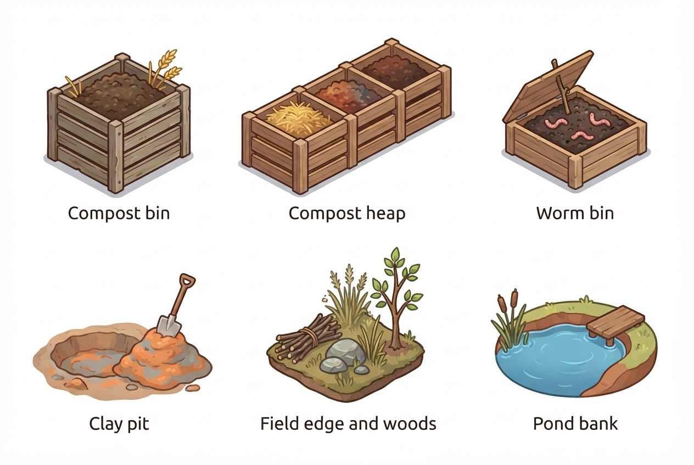
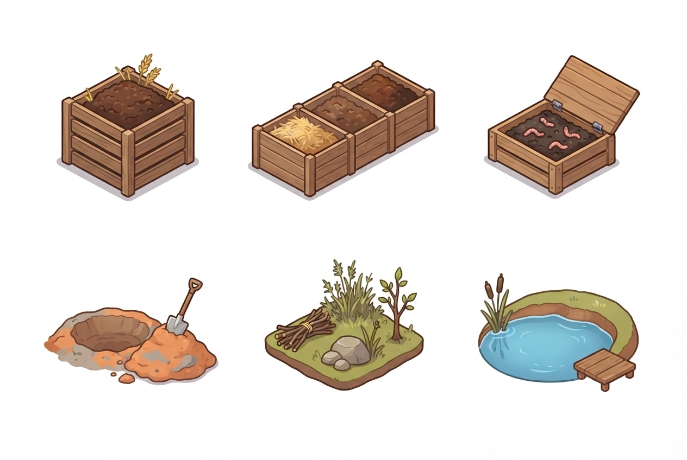
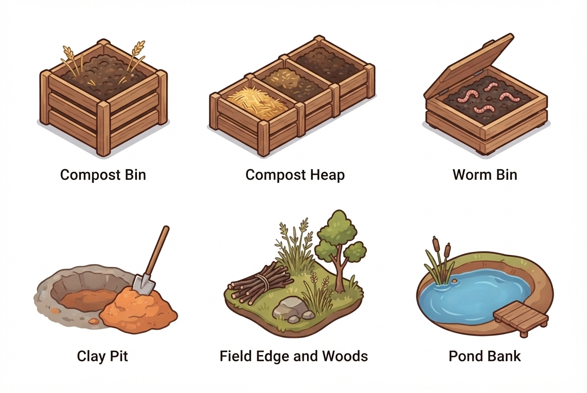

Green frame = the pick used in the game. To swap: python3 .claude/skills/openart-pictures/fetch.py pick sheet64-interior-g <version>, then import again.



A sprite sheet of exactly 6 separate objects in 2 rows of 3: compost and earth stations of an old-fashioned farm, as game station icons, in exactly the art style of reference image 1 (use it only for the style): bright, friendly mobile-game cartoon, thick rounded dark outlines, flat colours with simple cel shading, chunky cute proportions, three-quarter top-down view (isometric, like Hay Day), small soft shadow under each. Plain pure white background, evenly spaced with wide white space between them, none touching, each one solid piece with no loose crumbs, soil clods, sparks, steam, sparkles, flies or motion lines beside it. No text, no letters, no numbers, no captions under the objects, no frames, no grid lines, no people, no hands, no faces on any object. All six are seen from the same angle at about the same scale. Row 1: (1) compost bin: an open wooden slatted box full of dark brown compost with a few golden straw stalks poking out; (2) compost heap: a long wooden frame with four open bays side by side, each bay filled with compost of a different shade from golden straw to rich dark brown, all one solid piece; (3) worm bin: a low wooden crate with its lid propped open, dark crumbly soil inside and three pink earthworms resting on the soil. Row 2: (4) clay pit: a shallow round pit with a heap of orange-grey clay beside it and a wooden shovel stuck in the clay; (5) field edge and woods: one small patch of ground with a bundle of brown sticks, two grey stones, a clump of tall wild weeds and a small young tree, all on one patch of earth; (6) pond bank: a small round pond of blue water with a brown clay bank on one side, a few reeds and a short wooden plank landing.